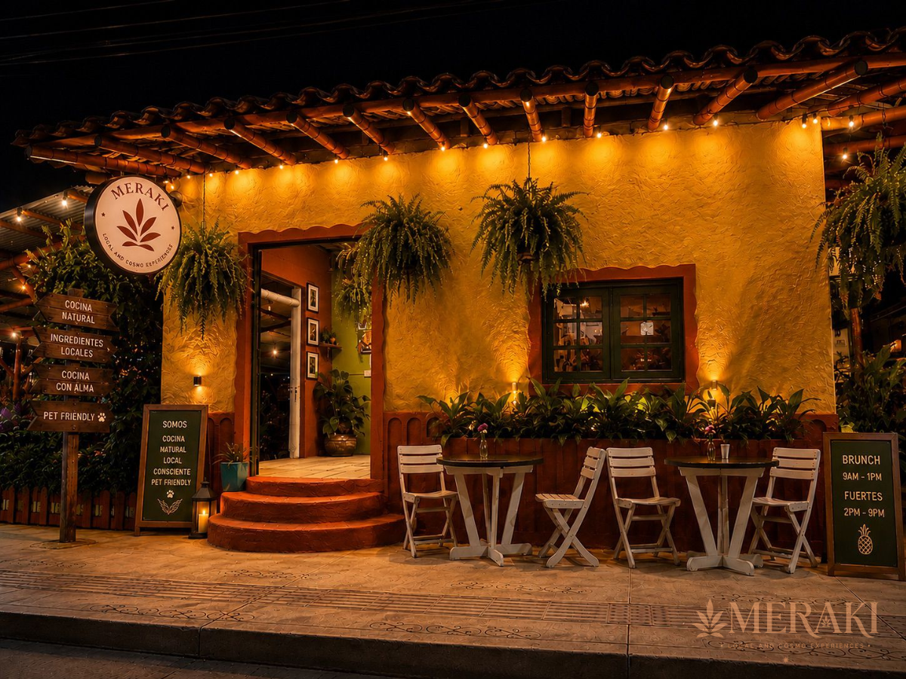
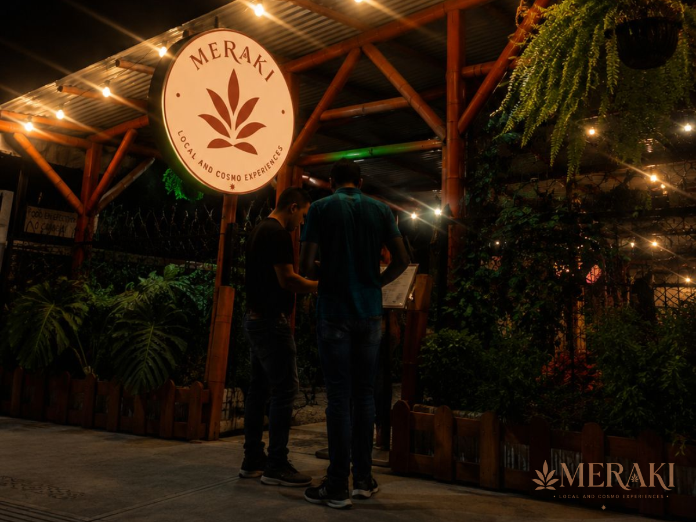

Cocina de autor, cafés especiales, bienestar botánico y experiencias exclusivas en Salento.
Un refugio de cocina de autor y bienestar en el corazón de Salento.

Un espacio acogedor con calidez artesanal en Salento.

Iluminación íntima y detalles pensados para cada experiencia.
Visítanos en Salento, Quindío. Atendemos a viajeros, locales y huéspedes en convenio.
Cra. 3 #5-56
Salento, Quindío, Colombia
Lunes a Domingo
2:00 PM – 10:00 PM
WhatsApp: +57 322 285 8658
Instagram: @merakilocal.cosmo